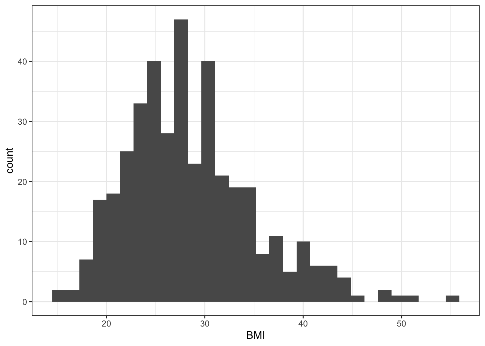
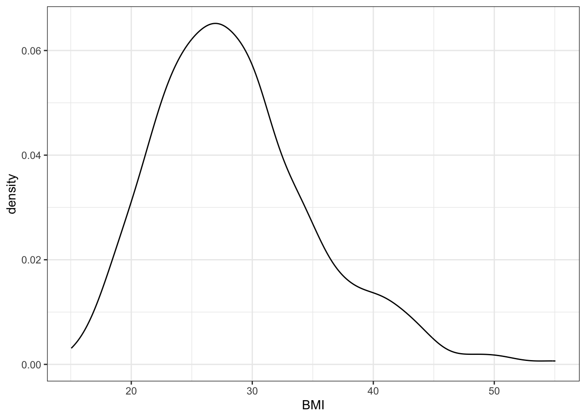
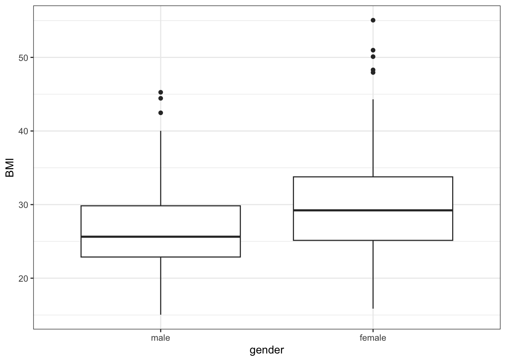

Code
# load libraries
library(tidyverse)
library(kableExtra)
library(ggplot2)
library(ggbeeswarm)
library(gridExtra)# load libraries
library(tidyverse)
library(kableExtra)
library(ggplot2)
library(ggbeeswarm)
library(gridExtra)Exercise 10.1 (Summarize diabetes data) Use below code to load diabetes data set and calculate BMI and add categorical variable obese (Yes) if \(BMI \ge 30\) and No otherwise. Summarize variables: obese, age and gender reporting mean and sample standard deviation for numerical variables and counts and percentage per group for categorical variables.
library(faraway)
library(tidyverse)
inch2m <- 2.54/100
pound2kg <- 0.45
data_diabetes <- diabetes %>%
mutate(height = height * inch2m, height = round(height, 2)) %>%
mutate(waist = waist * inch2m) %>%
mutate(weight = weight * pound2kg, weight = round(weight, 2)) %>%
mutate(BMI = weight / height^2, BMI = round(BMI, 2)) %>%
mutate(obese= cut(BMI, breaks = c(0, 29.9, 100), labels = c("No", "Yes"))) Exercise 10.2 (Plot diabetes data) Try various plots to visualize diabetes variables: BMI and gender. Start by making a histogram and density plot for BMI and box plot of BMI stratified by gender status. Can you think of any other plots that may be useful here to visualize the relationships between BMI and gender?
Solution. Exercise 10.1
Age is a numerical variable and we can calculate mean and sample standard deviation for example as below:
data_diabetes %>%
select(age) %>%
summarize(age_mean = mean(age, na.rm = T),
age_sd = sd(age, na.rm = T)) %>%
print() age_mean age_sd
1 46.85112 16.31233Gender and obesity status are categorical variables and we can calculate counts and percentages per groups as below:
summary_gender <- data_diabetes %>%
select(gender) %>%
group_by(gender) %>%
summarize(n = n()) %>%
mutate(percent = n * 100 / nrow(data_diabetes)) %>%
print()# A tibble: 2 × 3
gender n percent
<fct> <int> <dbl>
1 male 169 41.9
2 female 234 58.1summary_obese <- data_diabetes %>%
select(obese) %>%
group_by(obese) %>%
summarize(n = n()) %>%
mutate(percent = n * 100 / nrow(data_diabetes)) %>%
print()# A tibble: 3 × 3
obese n percent
<fct> <int> <dbl>
1 No 253 62.8
2 Yes 144 35.7
3 <NA> 6 1.49Alternatively, we can use one of the many R data summaries packages, for instance arsenal to summarize obesity status by age and gender.
library(arsenal)
tab1 <- tableby(obese ~ gender + age, data=data_diabetes)
summary(tab1)| No (N=253) | Yes (N=144) | Total (N=397) | p value | |
|---|---|---|---|---|
| gender | < 0.001 | |||
| male | 128 (50.6%) | 40 (27.8%) | 168 (42.3%) | |
| female | 125 (49.4%) | 104 (72.2%) | 229 (57.7%) | |
| age | 0.734 | |||
| Mean (SD) | 47.103 (16.745) | 46.521 (15.831) | 46.892 (16.402) | |
| Range | 19.000 - 91.000 | 20.000 - 92.000 | 19.000 - 92.000 |
Solution. Exercise 10.2
font.size <- 12
col.blue.light <- "#a6cee3"
col.blue.dark <- "#1f78b4"
my.ggtheme <- theme(axis.title = element_text(size = font.size),
axis.text = element_text(size = font.size),
legend.text = element_text(size = font.size),
legend.title = element_blank(),
legend.position = "top",
axis.title.y = element_text(angle = 0)) + theme_bw()
plt_hist <- data_diabetes %>%
ggplot(aes(x = BMI)) +
geom_histogram() +
my.ggtheme
plt_density <- data_diabetes %>%
ggplot(aes(x = BMI)) +
geom_density() +
my.ggtheme
plt_boxplot <- data_diabetes %>%
ggplot(aes(x = gender, y = BMI)) +
geom_boxplot() +
my.ggtheme
plt_hist
plt_density
plt_boxplot 
In addition, we could for instance try beeswarm plot and/or histogram stratified by gender. Or we can try also overlaying box plots over the jitter plot either for all BMI variables or separately for males and females. Sometimes, it may be also a good idea to plot summary statistics, e.g. a barplot at a height of means and error bars representing standard deviation, error bars or confidence intervals. See this post for inspiration if you’d like to try plotting the summary statistics instead http://www.cookbook-r.com/Graphs/Plotting_means_and_error_bars_(ggplot2)/